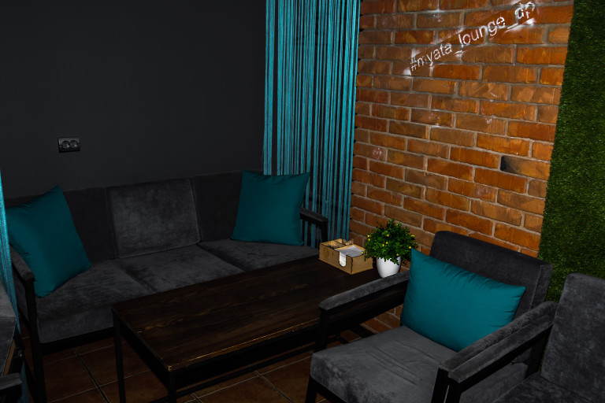
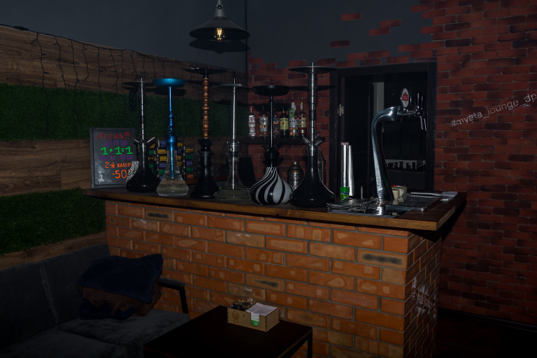

Общая информация

Город:Днепр
Адрес: ул. Чернышевского, 21
Режим работы: 12:00-00:00
Тел.: +38(050) 971-21-33
Стоимость кальяна:160-270 грн.
Кредитные карты:принимаются
Табак:Serbetli | Fumari | Darkside | Tangiers
Кальяны:Amy | Amy Deluxe
Название Wi-Fi: Myata
Кальянная Мята в Днепре на Чернышевского производит полное впечатление островка безмятежности в шумном и быстром мегаполисе — увитый зеленью дворик, небольшой уютный зал и всегда исключительно теплый и радушный прием. Удачным можно назвать и месторасположение заведения: с одной стороны Мята находится неподалеку от одной из центральных улиц города — проспекта Гагарина, с другой — легкая удаленность от центра спасает посетителей от лишнего шума и уличной пыли.
Интерьер и атмосфера

Уже при входе сразу погружаешься в аутентичную атмосферу кальянной… Приятный, сглаживающий контуры полумрак, комфортные диваны с мягкими разноцветными подушками и уловимый аромат арабских табаков, плывущий под потолком — не настолько сильный, чтобы казаться навязчивым, но вполне ощутимый, чтобы не давать забыть о тематике заведения.
Стены оформлены кирпичом и искусственным зеленым мхом, что однозначно добавляет общей милоты интерьеру, а на каждом столике стоят живые цветы в вазе. Всего же столиков в кальянной я насчитала семь — 3 в одном ряду и 4 в другом, условное разделение между которыми дает легкая голубая кисея.
На стенах развешены репродукции на тему курения кальянов и сигарет, выдержанные в той же цветовой гамме, что и основные мотивы интерьера — серых тонах с чуть белым контрастом. В потолок вмонтированы вытяжки, работающие довольно неплохо. А еще, что, по моему мнению, часто бывает очень кстати, возле каждого столика наличествует по две розетки в открытом доступе. Что вкупе с отличным wi-fi делает пребывание в кальянной еще более комфортным.
Обслужывание
Обслуживание в Мяте также находится на достойном уровне. Дружелюбный персонал — приятная официантка и кальянщик, который знает и любит свою работу — это всегда залог успеха и процветания любого заведения, а уж тем более кальянной. К тому же при заказе чая мне принесли комплимент от Мяты — вкуснющий капкейк, украшенный кремом. Это было очень неожиданно… а потому вдвойне приятнее :)
Отдельно стоит рассказать и о сцене, невольным свидетелем которой я стала. Уже когда я курила кальян, в заведение заглянула компания ребят, выглядящая явно моложе положенных 18 лет… К чести кальянщика, он был неприступен и отказался делать кальян без предъявления ими документов о возрасте. Не помогли ни уговоры, ни клятвенные заверения, что они все уже давно являются студентами… то ли 3, то ли 4 курса :)
Кальян

Было слегка жаль, что выбор табаков ограничивался лишь 4 позициями, поэтому пришлось выбирать из того, что было в наличии. В итоге я остановилась на фруктовом Fumari и уже спустя 15 минут смогла в полной мере оценить мастерство кальянщика.
Без лишних эпитетов просто скажу, что кальян был объективно хороший, вкусный, дымный, словом, таким, каким он и должен быть априори. Курился он тоже долго (отчасти и благодаря тому, что угли регулярно, каждые 10-15 минут, стряхивались) и, подозреваю, что если бы мне не нужно было через 1,5 часа уходить, он продержался бы и все два. А еще отлично дополнил кальян молочный чай улун, поданный в симпатичном стеклянном чайнике, которого хватило на все время моего курения.
Меню и цены

Итак, в Мяте можно насладиться и вкусным кальяном, и хорошими напитками.
Из безалкогольного в меню присутствуют авторские чаи и лимонады — все по 45 грн., чайник обычного чая обойдется в 30 грн., чашка кофе от 20 грн. На десерт к чаю можно заказать чизкейк (40 грн.), печенье, мед или шоколад. По алкоголю в наличии есть коктейли, несколько сортов пива, вина, шампанское, вермуты и крепкие напитки типа виски.
Кальянная карта представлена Serbetli за 160 грн., Fumari за 190 грн. и Darkside, Tangiers — по 270 грн. За добавку в колбу сока или молока придется доплатить 30 грн., и за фруктовую чашу еще 50.